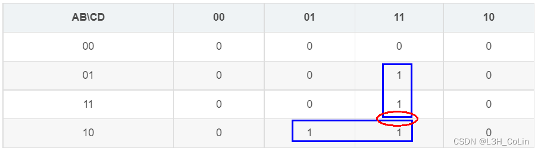
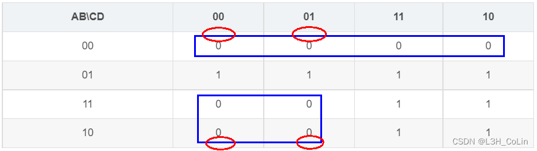

- 卡诺图中m/M编号对应错误
在画卡诺图时，有时没有注意到行和列的变量顺序，可能会导致m/M的序号从0遍历到15时，在卡诺图中的路径不同。如对于输入ABCD，将AB作为列，CD作为行，此时卡诺图中16块对应的m编号应如下表所示：
| CD\AB | 00 | 01 | 11 | 10 |
|---|---|---|---|---|
| 00 | m0() | m4() | m12() | m8() |
| 01 | m1 | m5 | m13 | m9 |
| 11 | m3 | m7 | m15 | m11 |
| 10 | m2 | m6 | m14 | m10 |
为了避免因遍历次序不同导致的错误，使遍历时统一按照大体上逐行读取的顺序（如下表），画卡诺图时应将前面2个变量置于行，后面2个变量至于列，左上角的块中应该写的是AB\CD。（不过如果卡诺图出在选项里面就不一定是这个顺序了，所以还是要注意）
| AB\CD | 00 | 01 | 11 | 10 |
|---|---|---|---|---|
| 00 | m0() | m1() | m3() | m2() |
| 01 | m4 | m5 | m7 | m6 |
| 11 | m12 | m13 | m15 | m14 |
| 10 | m8 | m9 | m11 | m10 |
-
8421码、2421码、余三码转2、8、10、16进制
三种码实际上均是10进制的表示形式，因此如果要转换为除10进制以外的形式，必须首先将其化为十进制数再进行进制转换，切忌转换后不化成十进制直接转换为其他进制。
如将余三码10001100转为2进制，1000还原为8421码是0101，1100还原为8421码是1001，2进制值不是01011001！十进制为59，故二进制应为111011。 -
使用卡诺图化简函数表达式
有时化简表达式很容易出现变量冗余的情况。为避免这种问题产生，在卡诺图中应首先标出1部分中所有的仅含1个变量的蕴含项，标完后写入表达式。如果此时还有没包含的“1”块，则继续寻找所有仅含2个变量的蕴含项，如此进行下去。在验证检查时，可以尝试反向检查，即画出“0”块的表达式，取反看看原运算结果是否正确。 -
各类触发器激励函数与约束方程
在考试前，针对各类触发器的激励函数与约束方程应该背熟，这是设计题的一个基础知识。虽然说通过推导也能推导出来，但耗费时间且不保证推导正确。
基本R-S触发器：
与非门构建的R-S触发器：，约束方程：（RS不同看R）
或非门构建的R-S触发器：，约束方程：（RS不同看S）
由于没有时钟信号的控制，其信号控制相当于是异步的
钟控触发器：
R-S触发器：（RS不同看S）
D触发器：（只看D）
J-K触发器：（JK不同看J）
T触发器：（只看T）
实际上上面的公式也有记忆的方法。
由于有时钟信号的控制，对于主从触发器，当且仅当时钟信号处于下降沿时才会触发触发器，读取输入并根据输入修改状态。但是阻塞D触发器是当且仅当时钟信号处于上升沿时才会触发触发器改变状态。（分析与设计题中一般不会考虑空翻现象，因此在这两种题型中默认使用的都是主从触发器） -
只有反码在计算减法时需要对结果的最低位进行调整。例如计算3-2，假设反码共4位，那么-2的反码应该是1101。0011+1101=10000，结果显然不对，需要将溢出的1加到最低位变为0001。如果计算6-7，则应为0110+1000=1110，此时结果正确，因为没有溢出。这也是反码加减法的计算方法：如果有溢出则将溢出的1加到最低位，没有则直接得到结果。原码的加减法直接计算更为复杂。反码和补码能将减法转换为加法，但是原码不行。
-
同时有一个变量的正反形式的表达式不一定会存在险象，还是看卡诺图最为保险！
探究：如何仅通过卡诺图判断一个险象是“0”型还是“1”型险象、是什么变量产生险象?
回顾一下，“0”型险象是A+~A产生的，“1”型险象是A· ~A产生的，记忆很简单，A+ ~A本来应该是1，险象就说明有错误，那就是产生0嘛。注意：0险象仅产生于使用含与或表达式的函数表达式构建的电路中，1险象仅产生于使用含或与表达式的函数表达式构建的电路中。如果电路完全按照与或表达式构建，则只可能产生“0”险象；如果电路完全按照或与表达式构建，则只可能产生“1”险象。
看个例子：
卡诺图如下：

显然这个例子中产生险象的是B，从图中何以见得？当ACD均为1时，相切处的两边正好就是B取0和1的值，均为1但会产生“0”险象。因此判断方法就是：看相切两边哪个变量的取值不一样，就是哪一个变量产生的险象。
对于“1”险象，看书上例子：：

相切处A变量不同，故A变量会产生“1”险象。
如果是混合的表达式：如这种，上面的方法虽然还能用，但容易错，因此建议使用传统方法，即配凑出原变量和反变量的和或积，反而更加方便。而且在要求设计电路的题目中并不会这样要求，要么是与或，要么是或与，由于设计题中需要画出卡诺图，因此通过上述方法无需进行配凑。出现混合表达式一般都是要求直接判断，画卡诺图反而费时间了。 -
主从J-K触发器有输入限制条件： 课本第89页指出在时钟信号作用期间J和K禁止发生变化，否则可能会产生错误信号输出（脉冲信号干扰产生的“一次翻转现象”），具体详见课本。
-
做含有触发器的题目时要注意时钟信号的输入有没有取反。所有的触发器在时钟信号为1时才会触发，因此如果直接将时钟信号输入触发器，则触发器应该是在时钟信号上升沿开始工作；而如果输入反变量，则应该是在下降沿开始工作。（分析题和设计题中一般不考虑一个时钟信号内有多个输入信号变化的情况，因此上升沿和下降沿一般被认为是输入信号作用的唯一时刻，所以要分清楚）
-
存在触发器并不是同步时序逻辑电路的必要条件，也不是充分条件（同步时序逻辑电路中的触发器必须要有钟控触发器，不能全是基本触发器）！
-
Moore型电路和Mealy型电路关于输出的区别在于：当时钟信号为无效时，Moore型电路由于输出不受输入的影响，可以保持当前状态的稳定输出；而Mealy型电路则可能会由于这段时间输入的变化而导致输出产生变化，不过这个时间段的触发器状态绝对不会改变。当时钟信号为有效时，Moore型电路的输入能够直接改变触发器的状态，在一个有效的时钟周期之内这种状态改变可能会多次产生（不考虑主从触发器），Mealy型电路也是如此。
-
芯片编号与功能汇总：
74283：4位并行加法器
74138：3-8线译码器
7442：二-十进制译码器
7448：七段显示译码器（用于数码管显示数字）
74147：十进制-BCD码编码器
74148：优先编码器（8-3线）
74153：多路选择器MUX（双4路）
74152、74151：多路选择器（8路，74152无使能端）
74150：多路选择器（16路）
74193：4位二进制同步可逆计数器
74290：异步计数器（二-五-十进制加法计数器）
74194：集成4位双向移位寄存器 -
画时间图时务必需要注意：
(1) 是否是边沿触发器（一般CLK输入以△注明，如果给出了触发器内部的电路图，发现是普通钟控触发器，就需要考虑空翻现象）
(2) 上升沿触发还是下降沿触发（如果输入有圆圈，即取反操作，则为下降沿触发，直接输入则为上升沿触发）
(3) 如果明确为主从触发器，对于JK主从触发器需要考虑是否存在一次空翻现象，因此需要将JK主从触发器的主和从触发器的状态均画出
(4) 垂直的虚线一定要画，但不要画的太重太粗以影响审题 -
各种图表
在时序逻辑和组合逻辑电路的分析和设计中经常需要画图画表，各种表的名字很像，稍有不慎就会画成另外一种表，需要格外注意分清。
真值表：在组合逻辑电路中指列出所有输入情况与对应的输出的表格，包含表项有：所有输入与所有输出
原始状态表：同步时序逻辑电路设计中根据功能需要而列出的状态表，没有进行状态化简，所有状态均以字母表示。
最小化状态表：同步时序逻辑电路设计中由原始状态表化简得来的状态表，含实现特定功能电路所需的最少状态与转换关系。
状态表：在时序逻辑电路中指列出所有不同现态、不同输入与对应的输出的表格，包含表项有：所有触发器状态变量对应的现态（分析时由于电路已知，现态使用二进制码表示，设计时需要用字母表示）、所有输入情况x（设输入变量个数为n，在同步时序逻辑电路中，输入情况的种类数量应为2n，在异步时序逻辑电路中，输入情况的种类数应为n，因为异步时序不允许同时两个变量输入）、次态与输出（Moore型次态和输出分别列出，Mealy型次态和输出一起列出）
隐含表：同步时序逻辑电路设计中为化简原始状态表而画出的三角形表格，左边一列应该从第二个状态写到最后一个状态，下边一行应该从第一个状态写到倒数第二个状态。
次态真值表：在时序逻辑电路中指列出所有输入与现态对应的激励函数与次态的表格，包含表项有：输入与现态的所有组合形式、所有激励函数、次态。在异步时序逻辑电路中激励函数不止包含JK/RS/D/T，还包含时钟信号，↓表示下降沿信号，↑表示上升沿信号。
激励函数与输出函数真值表：在时序逻辑电路中指列出所有输入与现态对应的激励函数与输出的表格，包含表项有：输入与现态的所有组合形式、所有激励函数、所有输出函数。此表有时也会将次态与状态跳变（见于异步时序）列出，这样能够反映出该同步时序逻辑电路的所有状态的所有情况。
激励表：反映某种触发器从现态到次态转换与输入的关系，包含表项有：所有现态与次态的组合形式（共4种，0→0,0→1,1→0,1→1），对应的输入值（JK/RS/T/D），特定触发器的激励表固定不变。在异步时序逻辑电路中，激励表还应加上时钟端信号。
功能表：反映某种触发器所有输入对应的次态，包含表项有：所有输入的组合形式、对应的次态。与激励表不同的是，功能表反映当输入为多少时次态会变成什么，而激励表反映触发器从某种现态转换到某种次态时可能的输入有哪些。 -
各种函数表达式
输出函数表达式：描述输出的函数表达式。自变量：现态、输入；因变量：输出
激励函数表达式（又称驱动函数表达式、驱动方程表达式）：描述存储电路输入与电路输入和状态之间的关系。自变量：输入、现态；因变量：存储电路输入（JK/RS/T/D）
次态函数表达式：描述次态与激励函数和现态的关系。自变量：现态、激励函数；因变量：次态
状态方程表达式（又称次态方程表达式）：描述次态与现态、输入之间的关系。自变量：现态、输入；因变量：次态（通常由次态函数表达式转化而来） -
阵列逻辑图
使用不同的PLD画阵列逻辑图需要注意固定的画点，可编程的画叉，不要画错了。PROM与阵列固定或阵列可变；PLA与阵列或阵列均可变；PAL、GAL与阵列可变或阵列固定 -
常见的电路功能：
模n计数（多为普通二进制码，也做过用格雷码计数的）、序列检测器（标志：有很多指向一个状态的情况）、序列发生器、n位全加器、n位全减器、n位比较器、不同码的转换等。如果通过状态表一时间看不出来是什么功能，可以尝试在输入固定的情况下追踪状态，状态图如果过于复杂也可以先画在草稿纸上，排布一下状态的位置，以让图更美观。 -
状态编码
3条状态编码的优先规则一定要理解。
第一条相同输入、相同次态→现态相邻（看状态表次态中某一列中是否有相等的）
第二条相同现态，相邻输入→次态相邻（看状态表中某一行所有相邻的两个次态[注意：状态表中次态大列中每一小列的顺序应该按照格雷码的顺序来写，即如果输入2位，则从左到右应依次为：00，01，11，10]）
第三条任意输入，输出相同→现态相邻（看Moore状态表中输出列是否有相等的、看Mealy状态表中次态/输出的n小列中是否有输出完全相等的两行） -
乘法的电路设计
一般设计某两个数乘法都需要用到4位加法器。在加法器数量有限的情况下，如何使用最少的加法器完成功能？对于二进制乘法，可以将其转换为加法计算。如4位二进制数的乘法，输出最多8位。通过列竖式可以求出每一位的值，同时可以发现4位二进制数的乘法实际上就是4个二进制数的加法。假设两个4位二进制数为，则最低位直接与即可输出无需占用加法器资源。在加的时候要注意进位的输出。 -
数电实验
在数电实验码表控制器模块，状态对应输出有5个，分别解释意义：
DP-SEL：码表显示选择器，其为1时显示当前计时，为0显示最好纪录
SD-EN：寄存器使能端，当需要更新最好纪录时置为高电平
SD-SEL：选择输入，第一次记录纪录时为1
TM-EN：计数器使能端，计时时为1，停止时为0
TM-Reset：码表清零端，清零时为1，将记录和时间均清除